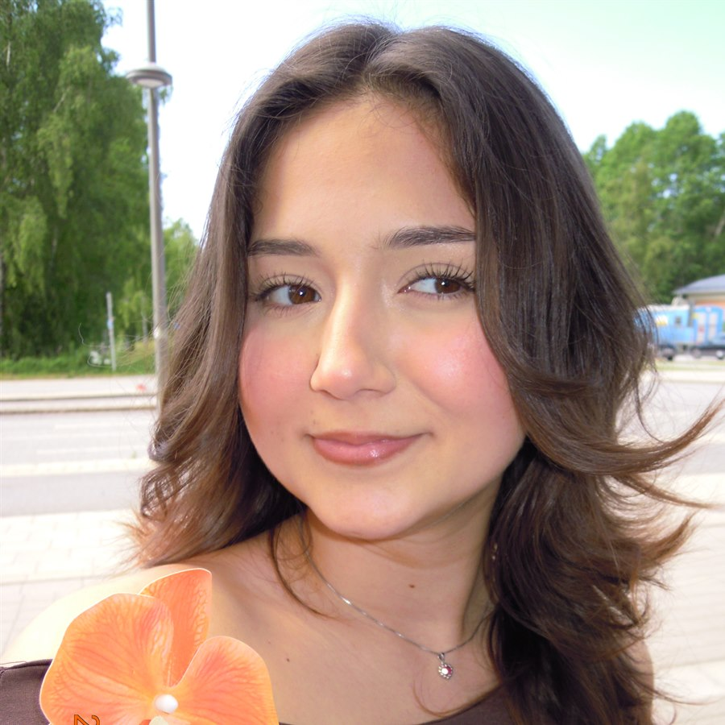
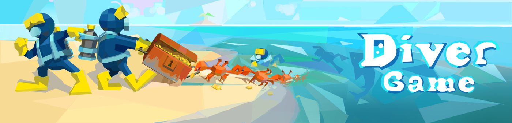
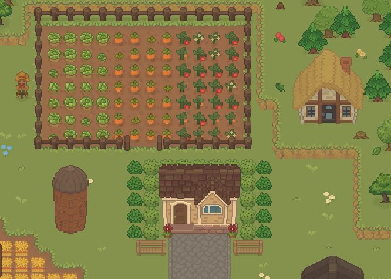
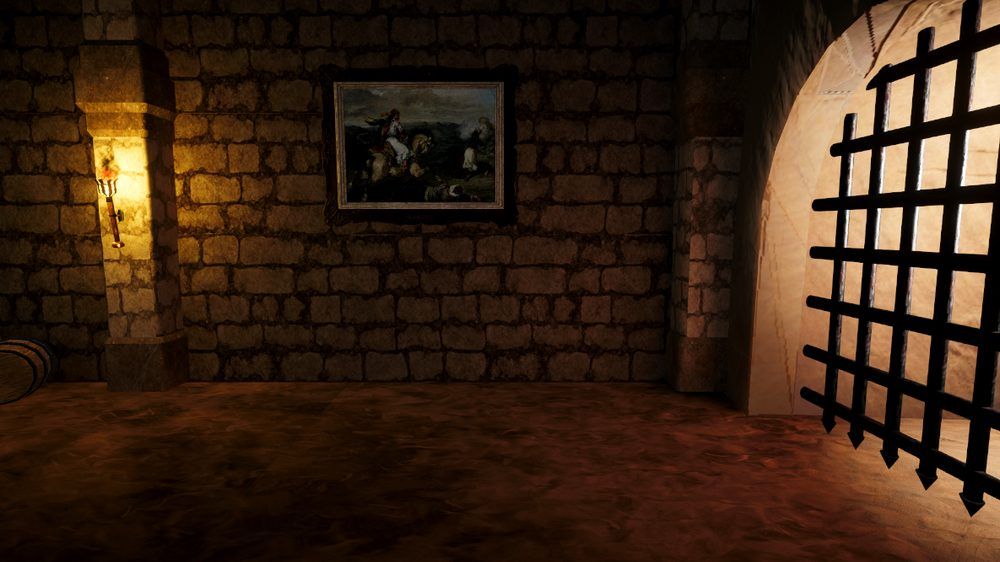
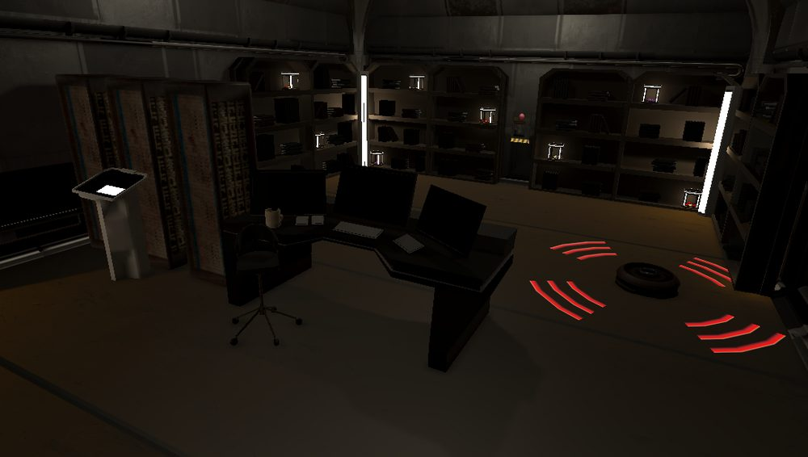
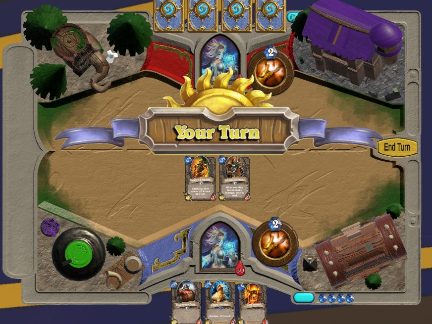
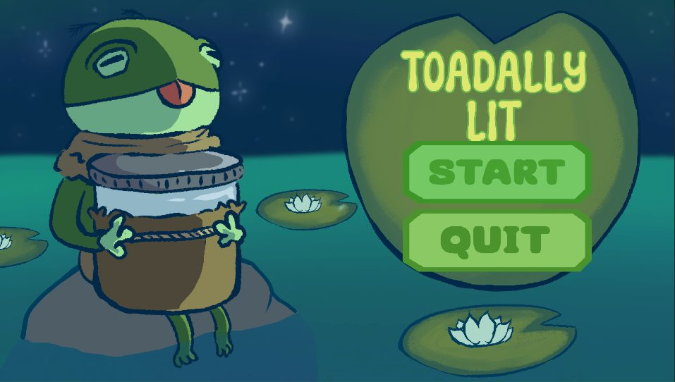
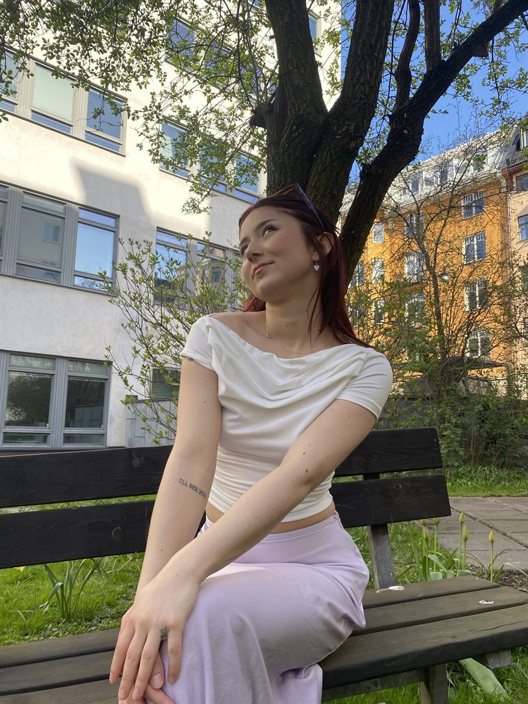

I turn ideas into playable systems.
Game development student mainly working with Unity and C#, with a particular interest in creating mechanics, systems, and interactive experiences.







I'm a game development student at Södertörn University, working towards my degree with a focus on game design and programming, graduating in spring 2027. I'm especially interested in gameplay programming and enjoy using C# and Unity to create interactive game mechanics and systems, figuring out how things should work, turning ideas into playable features, and seeing how different systems come together to create a fun player experience.
Alongside programming, I enjoy working with level implementation and environments, adding details to game worlds and making sure spaces, mechanics, and visuals work well together. I've taken on responsibilities across programming, gameplay systems, level implementation, environment work, UI, and project coordination, and enjoy collaborating and contributing wherever a project needs it.
I've also served as Vice Chairman and Communicator for LVL Spelförening, which sharpened my communication and organizational skills outside of pure development work.
Outside of development, you'll usually find me playing games, sketching new concepts, or spending time with my cats.

Södertörn University · 2024 – 2027
Looking to continue developing as a gameplay programmer, ideally at a studio where I can contribute to games while learning and growing. Open to collaborating or just chatting about game design.